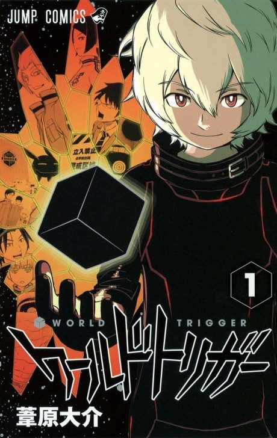

World Trigger
ワールドトリガー
After the anime, read the manga from Chapter 197.
7.3AniList score
—Animeter, no votes yet
99episodes, 3 seasons
Anime finished. Where does the manga pick up?
Start at Chapter197
Season 3 ends at chapter 196, the end of the B-Rank Wars arc, so start at chapter 197 (volume 23). Season 1 also had a 15-episode anime-original filler arc.
1196ongoing
Season 3Start reading here